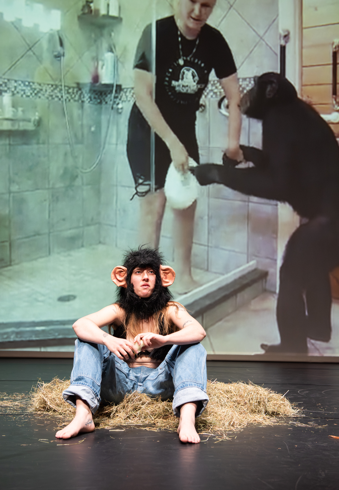
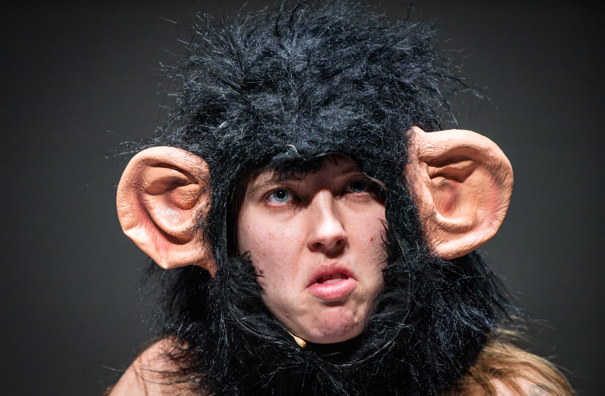
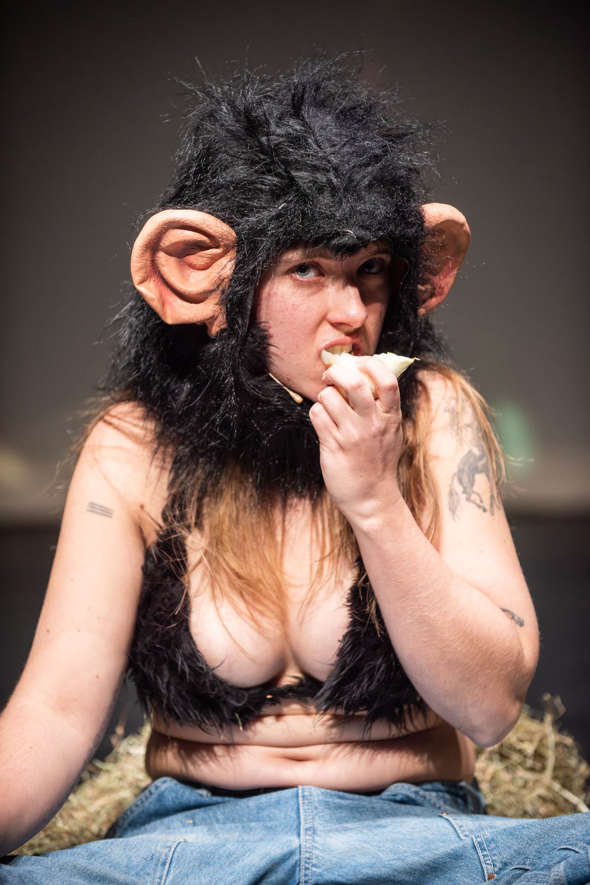
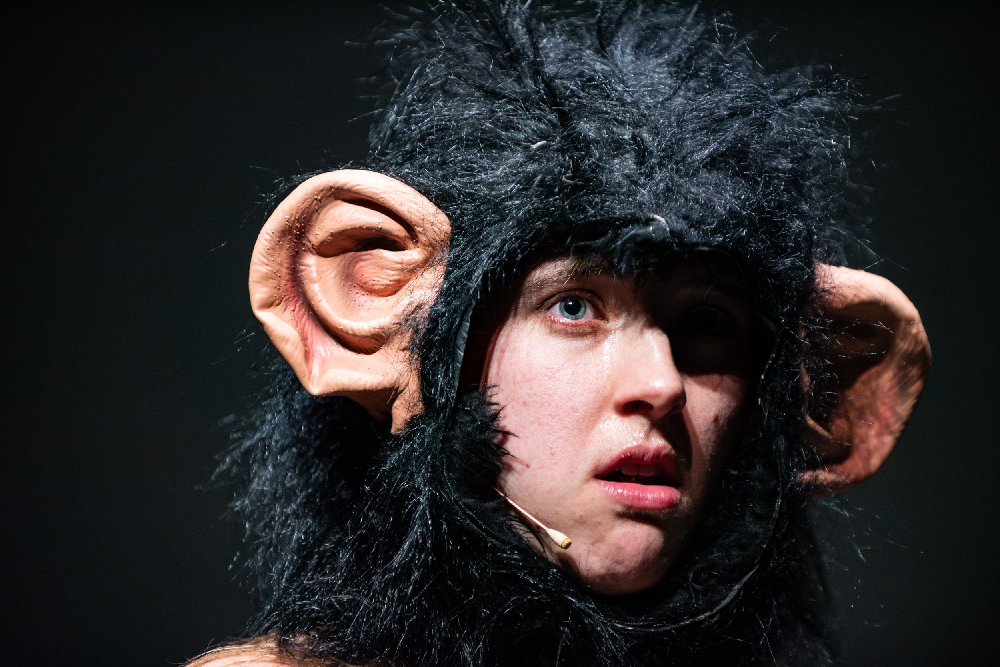
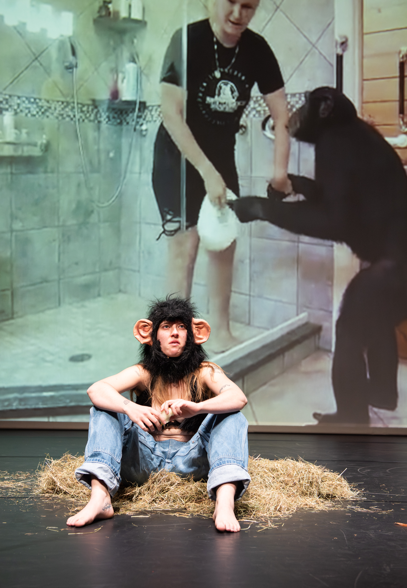
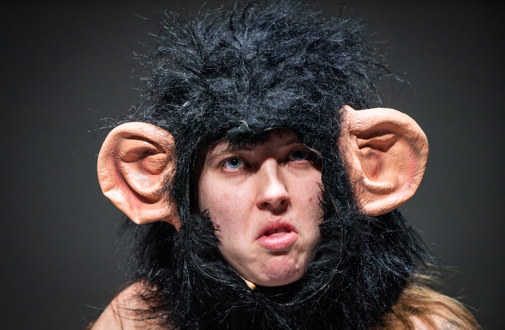
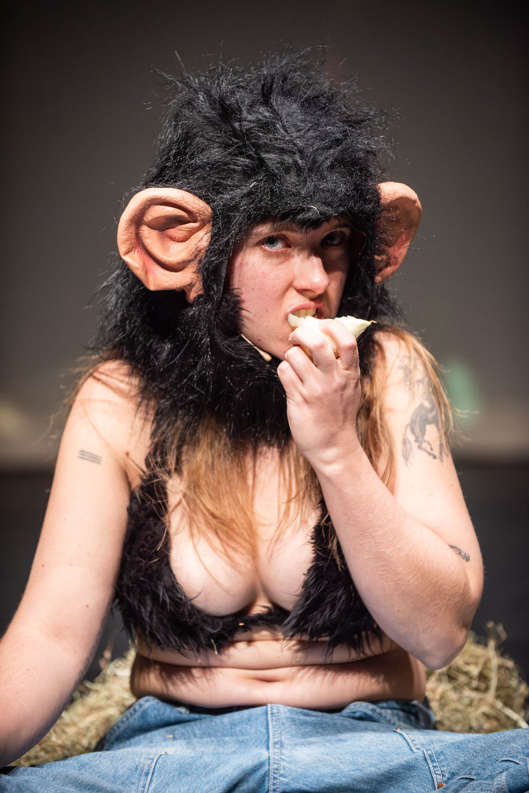
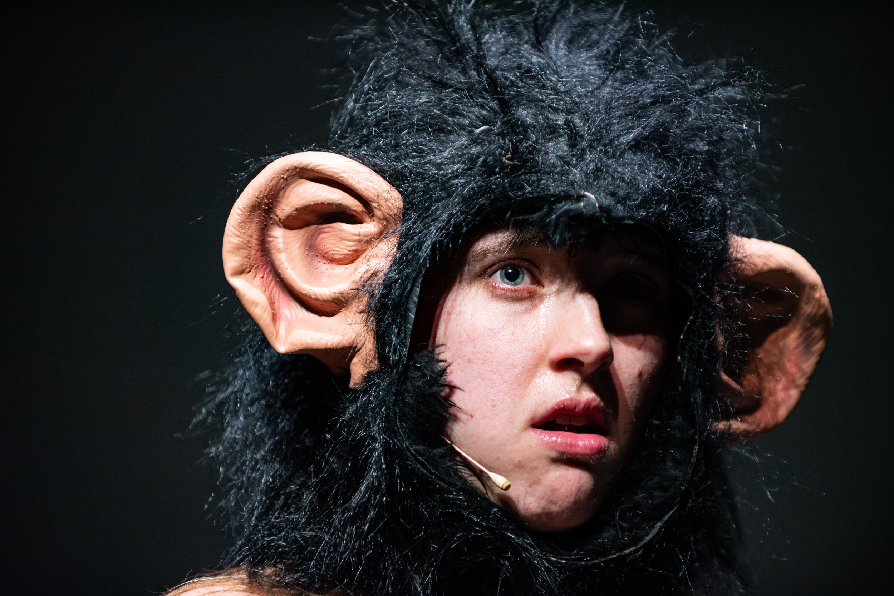

MAMMAL, 2026
performance, onions, hay, rope, video compilation of found footageWith MAMMAL I try to connect to the modern ape, the one who lives in big European cities and is addicted to iPads. I perform an ongoing practice of eating raw onions (inspired by the chimpanzees at the Artis Zoo) and embodying captivity. A video compilation plays, of historical and modern footage, sourced from different continents, representing the ways primates have been, and are, used for human entertainment. An absurd and colonial practice of human domination.
____________________________________________
I wanted to connect to my ape-ness. Not to be performing the ape, but to meet it as a human, to learn something from it. Something about care and honesty and submission.
I realized that the modern ape is entirely different than my initial idea. The modern ape is as stuck in the contemporary world as I am.
The modern ape is safer in captivity than it is in the wild. The modern ape is sanctuaried, is an actor, watches tv, plays on an iPad, and is fed onions for enrichment.
The modern ape is livestreamed, kept in a box, photographed with tourists, made to bicycle, and put in diapers.
The modern wild ape is poached, sold for meat and body parts, exported and traded.
The modern ape lives in the center of Amsterdam, London, Los Angeles, Copenhagen, Basel.
How then can we connect to this modern ape, the one we only experience sitting in its glass box in Amsterdam boredly eating ants out of a thingymajig? I propose to meet it halfway, not expecting a connection in return but trying to embody its captivity, do what it does.
Turns out I'm allergic to hay and get insane headaches, nausea and mouth sores from raw onions.
This only accentuates the truth of my modern condition. I have stupid allergies like dust mites that make me succeptible to every environment.
I recently read an article about that bonobos can play pretend. When presented with an imaginary tea party, fed fake grapes and juice, they play along.
"Study shows humans aren't the only species that can pretend".
It's me and you both, baby. Me and the apes playing make-believe.
Performed as a work-in-progress at Frascati, Amsterdam for the event Come Together (11).
Photographed by Reinout Bos.